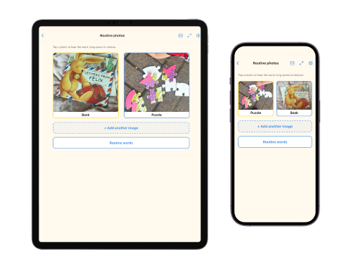
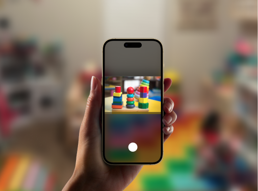
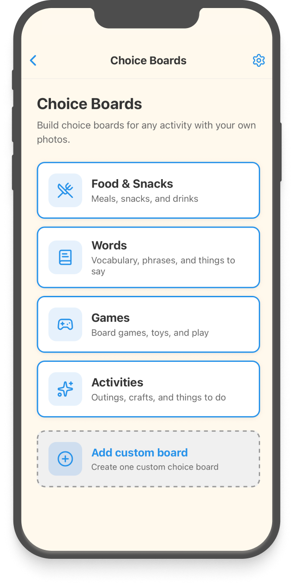
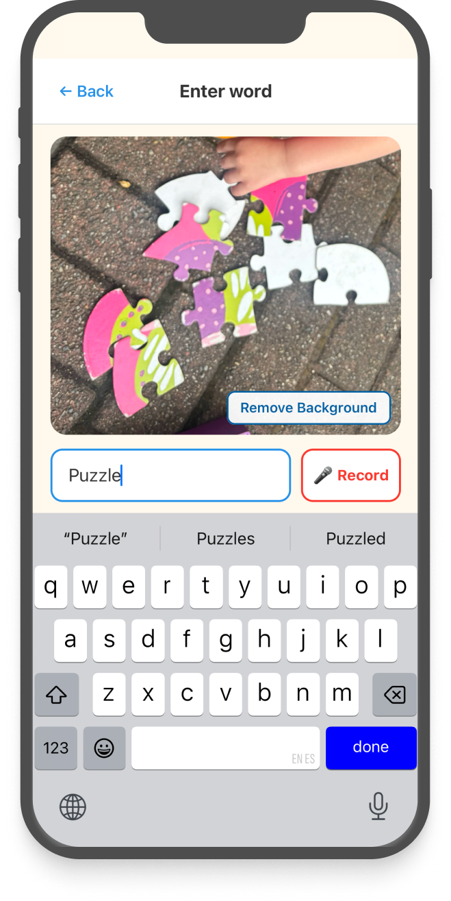

What is Point2Picture?
A simple communication tool that helps children communicate using familiar photos and personalized boards.
For families and professionals
Point2Picture helps caregivers, BCBAs, and RBTs create personalized ABA communication boards using familiar photos, customizable voices, and everyday routines.


A simple communication tool that helps children communicate using familiar photos and personalized boards.

Take photos, create boards in minutes, and tap images to hear words spoken aloud.
Designed for parents, caregivers, therapists, and educators supporting minimally-speaking and non-speaking children.
Create boards with custom photos, labels, voices, and layouts.
Choose different voices, languages, and speaking speeds.
Build personalized communication and choice boards quickly, so they're ready whenever you need them.


From photo to communication card in just a few taps.
"Many of the families I support can't afford traditional AAC apps. Point2Picture gives them a more accessible way to build communication tools for their children."
"I shared Point2Picture with the mom of my 4-year-old non-speaking client, and she loved the concept right away."
"My client can't use many traditional AAC tools because her communication goals are different. Point2Picture is a simple digital choice board that's easier to personalize with photos of her objects."
Started by a behavior technician and shaped by conversations with caregivers, BCBAs, and fellow RBTs, Point2Picture was created to offer a simpler way to build communication boards using familiar photos.
No. Point2Picture is designed to complement existing AAC systems, speech therapy, and communication supports. It provides a simple, approachable way to build personalized boards using familiar photos and routines.
Point2Picture is designed for parents, caregivers, therapists, educators, and others supporting minimally speaking or non-speaking children.
Yes. Point2Picture is designed for use in ABA therapy and at home. BCBAs, RBTs, and caregivers can build photo-based choice boards that support communication goals during sessions and everyday routines.
Yes. You can create boards using pictures from your child's everyday environment, making communication more familiar and meaningful.
Yes. Customize images, labels, layouts, voices, and routines to fit each child's needs and preferences.
No. Point2Picture is designed to be simple and lightweight. Most boards can be created in just a few minutes.
Yes. Behavioral technicians, speech therapists, educators, and other professionals can use Point2Picture alongside their existing approaches.
Yes. Point2Picture is intended to support—not replace—the communication strategies and therapies families already use.
Point2Picture is currently available on iPhone and iPad.
We're also working on expanding support to additional devices, including a web app, to make Point2Picture more accessible across different settings and platforms. Sign up for updates to hear about future releases.
Point2Picture supports multiple languages and customizable voices to help meet the needs of different families.
Get updates on new features and app support.